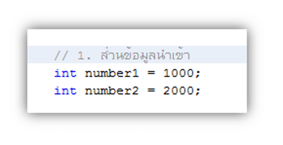

ตัวอย่างการใช้งาน Java
การใช้งาน Java
โดยหลักของ Java มีความคล้ายใกล้เคียงกับภาษา C และ C++ อีกทั้งยังตัดความยากหรือความซับซ้อนต่าง ๆ ของภาษา C และ C++ โดยใช้หลักการของ Object-Oriented Programming มาแทนที่มากขึ้น จึงทำให้การพัฒนาในเรื่องของหน้าจอ ไม่ใช่เรื่องที่ยากที่จะใช้งาน โดยในการใช้งาน สามารถที่จะใช้ผ่านโปรเเกรมที่มีชื่อว่า JDK หรือก็คือ Java Development สามารถดูการพัฒนา Java Platformการพัฒนาโปรแกรมภาษาจาว่าบนเครื่อง Platform ต่างๆ
ในการเริ่มต้นเขียนโปรแกรม เราจะแบ่งโค้ดออกเป็น 3 ส่วนหลัก ๆ ตามส่วนต่าง ๆ ของคอมพิวเตอร์ คือ 1) ส่วนของการนำเข้า 2) ส่วนของการประมวลผล และ 3) ส่วนของการแสดงผลลัพธ์
จากภาพที่ 1 หากลองอ่านโค้ดและคอมเมนต์คร่าว ๆ ดู เราจะเห็นว่า การเขียนโปรแกรมแบ่งออกเป็น 3 ส่วนง่าย ๆ คือ
-
ส่วนข้อมูลนำเข้า
เป็นการประกาศตัวแปร 2 ตัว ชื่อ number1 และ number2 ซึ่งเก็บค่า 1000 และ 2000 เอาไว้ เป็นข้อมูลที่รอการประมวลผล เพื่อหาผลลัพธ์ในส่วนต่อไป
 -
ส่วนประมวลผล
ในการประมวลผล เราได้ประกาศตัวแปร result มารับค่าผลลบวก (+) ของค่าที่เก็บอยู่ในตัวแปร number1 และ number2 ซึ่งตัวแปร result จะต้องได้ผลลัพธ์เป็น 3000

-
ส่วนแสดงผล
ในการแสดงผล เราใช้คำสั่ง System.out.println() เพื่อแสดงผลลัพธ์ คือค่าที่เก็บอยู่ในตัวแปร result

เมื่อสั่งให้โปรแกรมทำงาน (run) เราจะได้ผลลัพธ์ดังภาพที่่ 5 ผลบวกคือ 3000